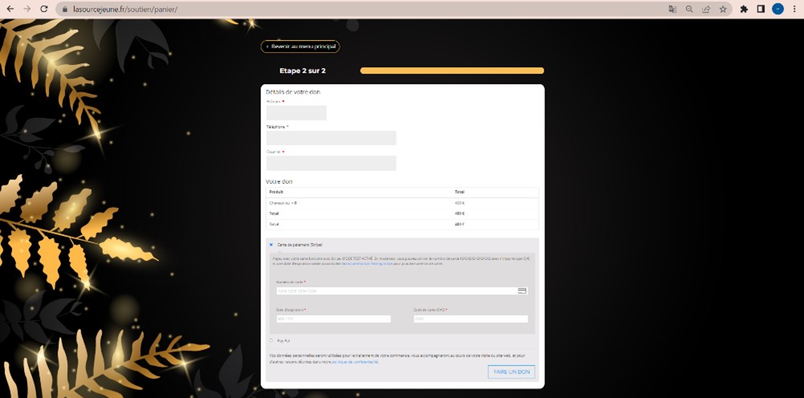
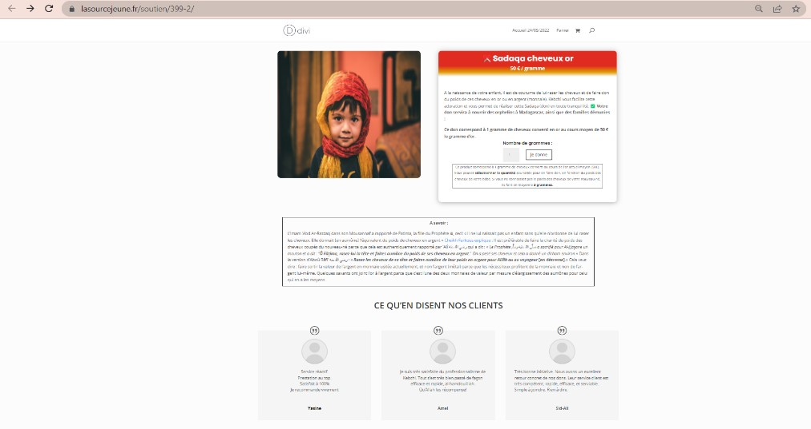
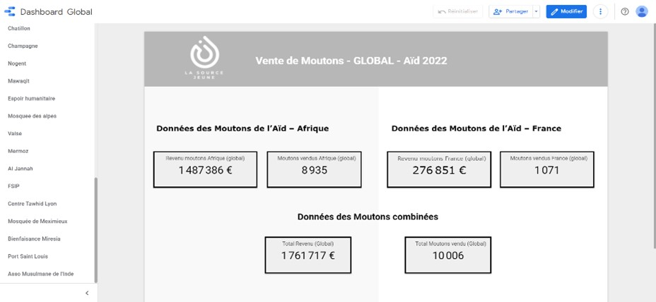
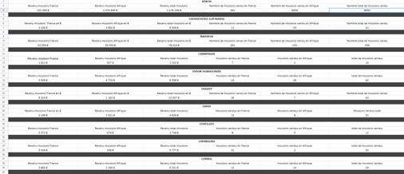
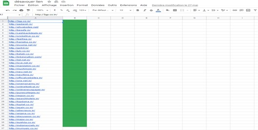
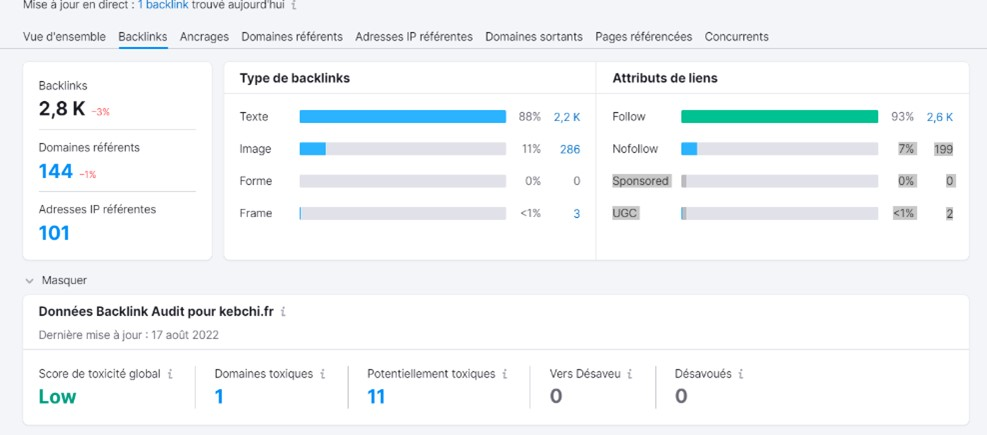
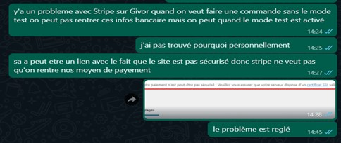
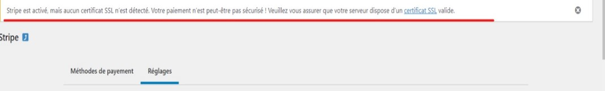
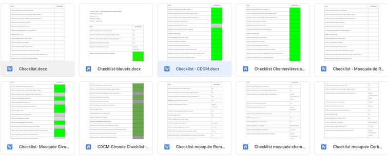
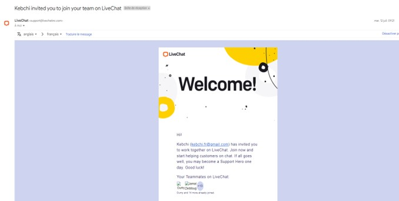

<!DOCTYPE html>
<html lang="en">
<head>
    <meta charset="UTF-8">
    <meta http-equiv="X-UA-Compatible" content="IE=edge">
    <meta name="viewport" content="width=device-width, initial-scale=1.0">
    <link rel="stylesheet" href="stage.css">
    <link rel="shortcut icon" href="public/icon.png">
    <link href="https://fonts.googleapis.com/css2?family=Oswald&family=Roboto:wght@400;700&display=swap" rel="stylesheet">
    <title>Stage 1</title>
</head>
<body>
    
</body>
</html>
<h1>Mon Stage</h1>

<h2>Stage de première année</h2>
<h3>La source Jeune (Web developpeur)</h3>
<h4>Mai 2022 - Juin 2022</h4>

<h2>Tache réalisé :</h2> 

 <h3>Création et publication de page Web :</h3>

 
 

 <h3>Optimisation du score SEO d'une Page Web : </h3>
 
 <div class="lien1">
    <a href="public/stage1/PageSpeed Insights 25.05.22.pdf">Avant amélioration</a>
    <a href="public/stage1/PageSpeed Insights 2.pdf">Apres amélioration</a>
 </div>
 

 <h3>Correction ou recherche de piste d'erreur http :</h3>
 <a class="lien2"href="public/stage1/Erreur Udiny 10.05.22.pdf">Rapport et piste de correction de la provenance des erreurs</a>

 <h3>Création d’outil de suivi de performance :</h3>
 
 

 <h3>Recherche de Backlinks et suppression des Backlinks toxique</h3>



<h3>Correction de Bug Wordpress</h3>



<h3>Vérification du respect des exigences d'un cahier des charges pour un site Web</h3>

<a class="lien2" href="https://docs.google.com/document/d/1wR5xrkVWT8S6pG_3UoCUJXLkVrPD3v9B/edit?usp=share_link&ouid=108172501749803513640&rtpof=true&sd=true">Cahier des charges vérifié</a>

<h3>Support client a l'aide d'un tchat en ligne pour répondre aux questions des utilisateur du site : </h3>



